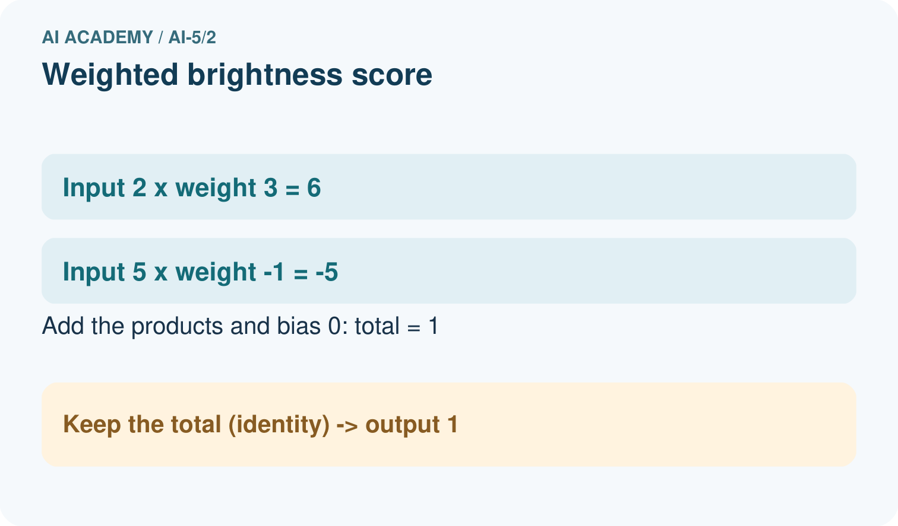
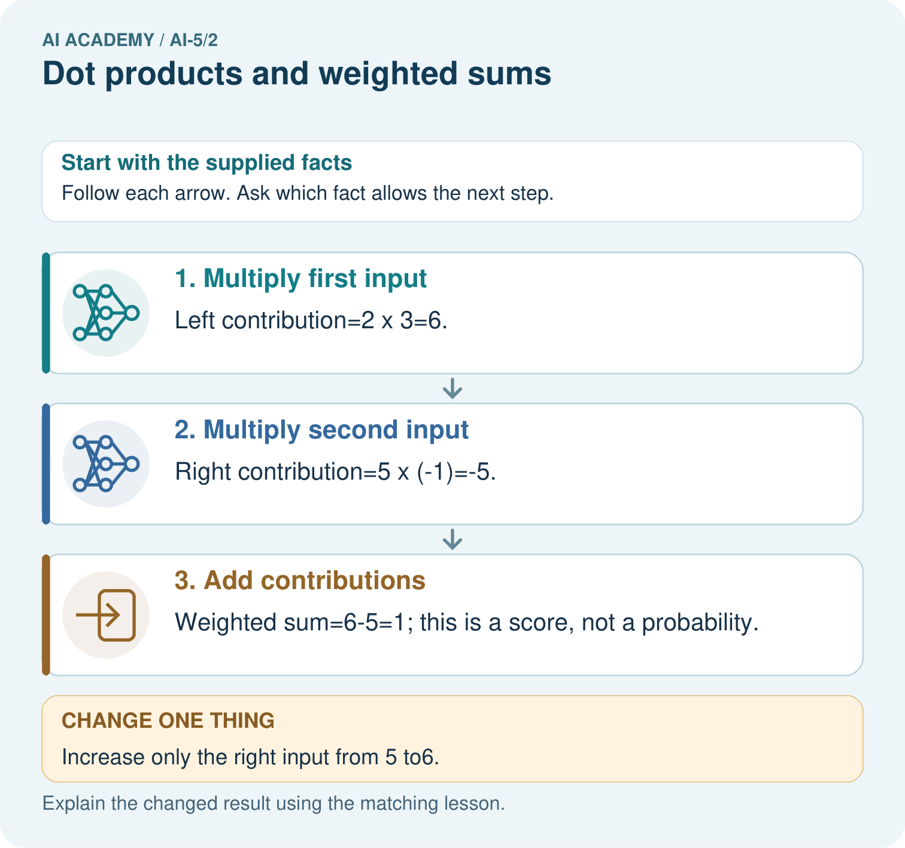

AI Academy · Level 5 · Grade 10 · Week 2 · Student lesson
Dot products and weighted sums
Learn to understand, design, build, test and explain AI systems responsibly.
Project: Image-pattern Network Investigation
Before you start
Under schema [width, height], why must [4, 2] and [2, 4] remain distinct?
Plan time to read, investigate and explain. Keep predictions separate from observations.
Student lesson · 1 of 16
Your mission
Your learning target
I can calculate a dot product by matching feature positions.
I can explain how a weight changes a score with other inputs fixed.
I can distinguish a weighted score from a probability or trained model.
Remember before reading
Close your notes first. A rough first answer helps us choose the right starting point; it is not a score for your ability.
Without opening the old lesson, explain one key idea from Representing inputs as vectors. Give an example and a mistake that the idea helps you avoid.
After trying, check the relevant lesson or ask your teacher. Change the part of your explanation that the evidence shows was wrong.
This week you will practise:
Calculate a dot product by matching feature positions
Explain how a weight changes a score with other inputs fixed
Distinguish a weighted score from a probability or trained model
Retrieve what you already know
Under schema [width, height], why must [4, 2] and [2, 4] remain distinct?
This week’s end goal
By the end, I can explain dot products and weighted sums using a traced example and a stated limitation.
Student lesson · 2 of 16
Notice the evidence
A small model can combine several measurements into one score. Let x = [4, 2] contain fictional width and height measurements in cm. Set weights w = [2, -1]. Multiply matching positions, then add: s = (2 times 4) + (-1 times 2) = 6. The letter x names the input vector.
We call this calculation a dot product, written w dot x. The vectors must have the same number of components. Each weight belongs to one named feature. These hand-selected weights demonstrate a computation; no training has happened. The result 6 is a score, not a probability or a claim that this parcel is safe.
| Feature | Weight times input | Contribution |
|---|---|---|
| Width | 2 times 4 | 8 |
| Height | -1 times 2 | -2 |
| Total | 8 plus -2 | 6 |
The coefficients carry score-per-cm units in this example, making both contributions compatible score units. A weighted sum needs a consistent definition of units.
Student lesson · 3 of 16
See how it works
Keep w = [2, -1] fixed. For A = [4, 2], the score is 6. For B = [2, 4], it is 4 - 4 = 0. For C = [3, 3], it is 6 - 3 = 3. Swapping input positions without swapping their matching weights changes the computation. A zero score can come from cancellation, even when neither input is zero.
def dot(weights, inputs):
if len(weights) != len(inputs):
raise ValueError("Mismatched dimensions")
return sum(w * x for w, x in zip(weights, inputs))
for row in [[4, 2], [2, 4], [3, 3]]:
print(dot([2, -1], row)) # 6, 0, 3The length check matters: Python zip alone stops at the shorter list and could silently omit a feature. The function assumes numeric inputs already validated under the schema. First predict the three printed values on paper, then compare.
Connect the picture and the explanation
Point to the input, the deciding step and the result in this week’s visual. Explain the same step in ordinary words. A picture helps when you can say what each part represents.
Student lesson · 4 of 16
Compare the cases
Compare a familiar case with a changed case
For w = [2, -1] and x = [2, 4], explain why score zero does not mean the input contains no information.
Change one thing in the pictured case
Change: Increase only the right input from 5 to6.
Prediction: The score becomes6-6=0.
Reason: The right weight is-1, so adding1 to that input lowers the score by1.
Student lesson · 5 of 16
Words that unlock the idea
| Word | Meaning |
|---|---|
| Weight | A numerical coefficient multiplying one input component |
| Dot product | The sum of products of corresponding vector components |
| Contribution | The product of one input component and its matching weight |
| Score | A numerical output whose interpretation must be specified |
Student lesson · 6 of 16
Follow a worked example
Multiply matching components then add
Learn from the worked case
Cover the result before checking it. Say what is given, choose the procedure, and follow one step at a time. Then uncover the result and explain your first mismatch. Ask why a step is allowed, not only what number it produces.
A pictorial worked case: Dot products and weighted sums
Draw each input’s contribution to a toy weighted brightness score.
The facts we will use
Inputs [2, 5]; weights [3,-1]; no bias. Score is 2×3+5×(-1).
All inputs and outcomes in this worked example are invented classroom data; no real model run is claimed.


Read the picture one step at a time
Why this result follows
A weight controls how strongly an input contributes to the score. The left connection adds three times its measurement; the negative right connection subtracts its measurement. Calculate each contribution before adding them. This dot product is a signed score; it becomes a probability only if a separate, justified transformation and interpretation are supplied.
What this example does not establish
These declared weights are hand-chosen toy parameters; no network training or calibrated probability is claimed.
Read the labelled picture: Which connection explains why more right brightness lowers this score? Point to the relevant step in the picture, then write the changed result and the rule or evidence that supports it.
Change one thing: Increase only the right input from 5 to6. Predict the result before checking the explanation. What remains the same?
Student lesson · 7 of 16
Find and repair a mistake
Holding other inputs fixed, raising width by 1 cm raises this score by 2; raising height by 1 cm lowers it by 1. A negative weight reverses the direction of that feature contribution. It does not label the feature as bad, and its sign alone does not explain cause in the world.
Unit changes affect coefficients. If height is written in mm instead of cm while width remains in cm, use height weight -0.1 instead of -1 to preserve the same scores. For [4 cm, 20 mm], 2 times 4 plus -0.1 times 20 still gives 6. Raw coefficient magnitudes cannot establish feature importance when units differ.
Locate the earliest unsupported step
Width stays in cm and height changes to mm. For the worked parcel [4 cm, 20 mm], give the revised weights and score.
Student lesson · 8 of 16
Practise together
For w = [2, -1] and x = [3, 5], write both contributions and their sum.
Practise with less help: Explain cancellation
Use workbook W2 for the connected example “Dot products and weighted sums”. First fill the input and rule boxes. Try the middle steps before asking for a hint. After a hint, try the next step yourself.
| Plan | Do | Check |
|---|---|---|
| What is given? Which rule or procedure applies? | Record each intermediate step. | Does the result follow? What remains unknown? |
Explain your trace to a partner. Your partner points to one step to check. Swap roles on the next case. Each person writes their own explanation.
Check your reasoning
Use the worked case for Dot products and weighted sums. Proposed explanation: “Multiply the sums instead”. Decide whether this explanation is supported. Point to the step or supplied fact that decides; explain your repair if needed.
Answer on your own before discussion. If you are unsure, say which step you need help with.
Explain the picture
Which connection explains why more right brightness lowers this score? Point to the relevant step in the picture, then write the changed result and the rule or evidence that supports it.
This is supported practice. Keep the separately named independent case for an attempt before feedback.
Student lesson · 9 of 16
Run the investigation
Predict, investigate and preserve the evidence
For w = [2, -1] and x = [2, 4], explain why score zero does not mean the input contains no information.
def dot(weights, inputs):
if len(weights) != len(inputs):
raise ValueError("Mismatched dimensions")
return sum(w * x for w, x in zip(weights, inputs))
for row in [[4, 2], [2, 4], [3, 3]]:
print(dot([2, -1], row)) # 6, 0, 3| Record | Your evidence |
|---|---|
| Given input and fixed rule | |
| Prediction before checking | |
| Actual result, or “not run” | |
| First mismatch and one explanation | |
| Boundary or missing input and expected response |
On paper, trace the supplied procedure. If code is provided, predict before running it in a local practice file. Never write an expected answer as though it were an observed run.
Plan → try → check
Before trying: what do I expect, and why? While trying: which step could first go wrong? Afterwards: what did I actually observe, and what should change? Keep “not run” if you only traced the procedure.
Student lesson · 10 of 16
Build your understanding
Explain → apply → challenge
For w = [2, -1] and x = [3, 5], write both contributions and their sum.
Width stays in cm and height changes to mm. For the worked parcel [4 cm, 20 mm], give the revised weights and score.
Verify that [4, 2] and [5, 4] both score 6 with w = [2, -1]. Can a later step receiving only this score distinguish those two records?
Student lesson · 11 of 16
Connect your project
Add a labelled dot products and weighted sums evidence sheet to Image-pattern Network Investigation. Show how you can calculate a dot product by matching feature positions. Use the supplied fictional case and keep its inputs, intermediate steps, calculation or prediction, and limitation. Connect this record to last week’s record; a matching answer without a trace is insufficient.
| Project evidence | Record |
|---|---|
| Component and version | |
| Inputs permitted at prediction time | |
| Trace and comparison with earlier work | |
| Failure, limit and human review |
Evidence for your project
For your Image-pattern Network Investigation, save the input, procedure, observed result and limitation of this check. Label this worked example as practice; use a different, previously unreviewed case when checking independent understanding.
Student lesson · 12 of 16
Show what you know
A weighted sum can combine evidence, but it discards information: [4, 2] and [5, 4] both produce score 6 under these weights. A downstream rule receiving only that score cannot recover which of these vectors was used. To classify, we would also need a stated decision rule and labelled evaluation examples.
Next week adds an offset called a bias and states exactly how a score becomes a class prediction.
Verify that [4, 2] and [5, 4] both score 6 with w = [2, -1]. Can a later step receiving only this score distinguish those two records?
Student lesson · 13 of 16
Study a complete case
Complete evidence record
Multiply matching components then add
Follow the input through the stated procedure to its result. Cover the result first, predict it, then explain every intermediate step. The text/table accompanies the figure so the example can be read without colour.
Student lesson · 14 of 16
Try a new case independently
Independent case: Compute a new dot product independently
Use x = [3, 1, 2] and w = [-2, 4, 0.5]. Give each contribution and the total. Increase only the second component from 1 to 2 and compute the new total. Explain why a two-weight list is invalid for this input.
Attempt this case before feedback. Record any help. Earlier examples below are further practice; a case already practised with feedback cannot establish fresh transfer.
Attempt this without hints
Use x = [3, 1, 2] and w = [-2, 4, 0.5]. Give each contribution and the total. Increase only the second component from 1 to 2 and compute the new total. Explain why a two-weight list is invalid for this input.
Record support used: none, hint or teacher explanation. After feedback, a different case is needed to demonstrate independence.
Use feedback to improve
Attempt the independent case before hints. Record whether you worked alone, used a hint or followed a model. After feedback, fix the first unsupported step and explain why it changed. A later check uses a changed case, not a copied answer.
Student lesson · 15 of 16
Your lesson route
Start with this question: Draw each input’s contribution to a toy weighted brightness score.
| By the end, I can | How I will show it |
|---|---|
| Calculate a dot product by matching feature positions | Explain the deciding step, show a trace or test, and state one limit. |
| Explain how a weight changes a score with other inputs fixed | Explain the deciding step, show a trace or test, and state one limit. |
| Distinguish a weighted score from a probability or trained model | Explain the deciding step, show a trace or test, and state one limit. |
Remember → watch and explain → try with help → investigate → try independently → keep project evidence. Your teacher may spread this lesson across several classes.
Keep your first prediction. Compare it with what the evidence shows and explain any change.
Student lesson · 16 of 16
Finish and return
Close your notes. Explain this goal in your own words: Calculate a dot product by matching feature positions
If you are unsure, return to the worked picture and explain one arrow. If you are ready, change an input or assumption and justify your prediction.
Save your workbook evidence. At the next review, try a different case before opening your old answer.